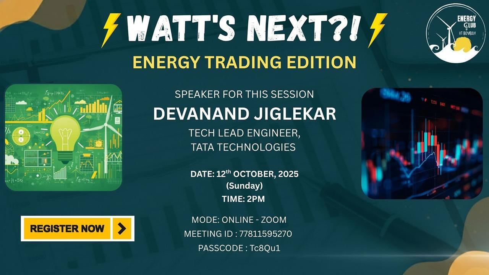
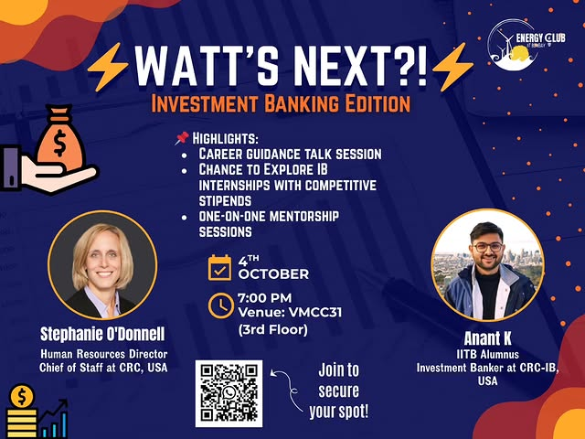
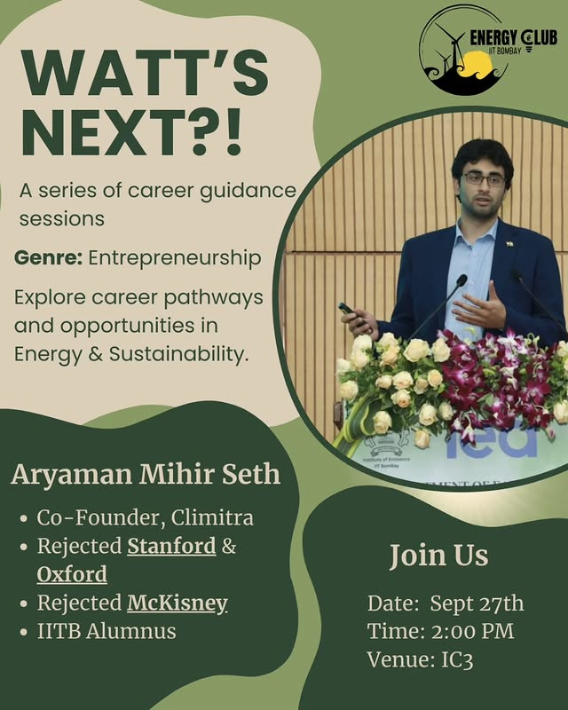

Energy packed talk sessions spanning Research, Policy, Corporate & Entrepreneurship.

Ready to power up your career in energy and sustainability? Join us for the Watt’s Next?! Energy Trading Edition with industry expert Devanand Jiglekar, Tech Lead Engineer at Tata Technologies! 🚗💡 Learn the basics of energy trading and explore the future of electric vehicles with real insights from 30+ years in automotive innovation.

Curious about high-finance careers that also touch clean energy and sustainability? Join us for an exclusive session with professionals from CRC, USA. 💼 Learn about IB internships with competitive stipends 🌱 See how finance drives sustainable projects 🎤 Hear from Stephanie O’Donnell (HR Director, CRC USA) & Anant K (IITB Alum, Investment Banker) 👥 Sign up for 1-on-1 mentorship Perfect for those interested in finance, energy, or impact-focused roles!

🌱 What does it take to reject Stanford, Oxford & McKinsey… and still carve your own path? ⚡ What does it take to turn passion into purpose in Energy & Sustainability? Find out from Aryaman Mihir Seth – Co-Founder of Climitra, former Sustainability Cell OC, and proud IITB 2024 Alumnus. 🚀 A career guidance session on Entrepreneurship where Aryaman shares his journey and insights into building impactful careers in Energy & Sustainability.